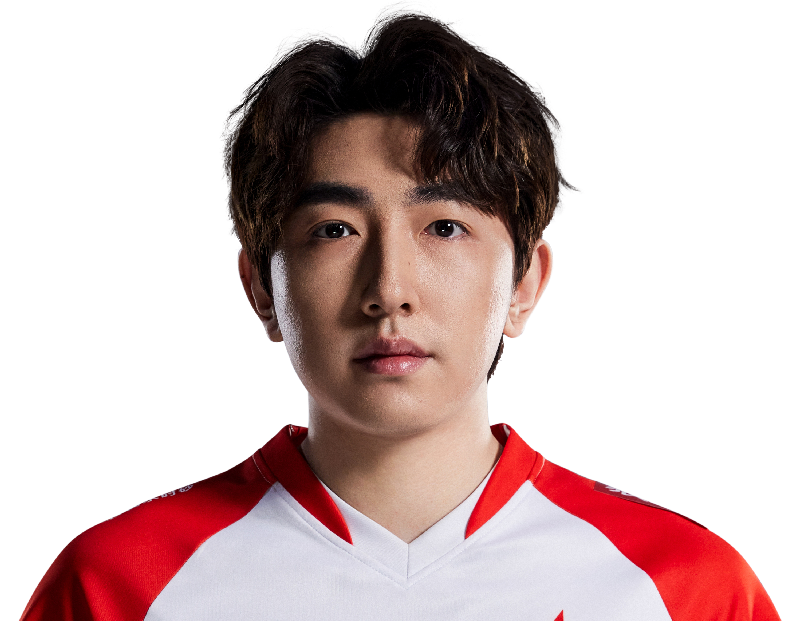

All Gamers / 杨勇
Shr1mp.
ALL IN. EVERY ROUND.SkyeShr1mp / 杨勇
Shr1mp / AG
ONE NAME.EVERY ROUND.ALL IN.
杨勇，All Gamers。
从每次选下英雄，到每次站上赛场。
Shr1mp / 赛场影像MOMENTS
MOMENTS
THAT MATTER.
Shr1mp.
All Gamers
每一瞬间，都是比赛的一部分。
Riot Games / 官方赛场影像
Shr1mp / 职业英雄池
DIFFERENT AGENTS.
SAME PLAYER.
从最熟悉的英雄，看到每一种打法。斯凯
Skye.
26% 全英雄使用占比
54职业出场地图
185.2平均战斗评分 ACS
0.98击杀 / 死亡 K:D
748总击杀
58首杀
VLR 全时期职业数据 · 2026-11-02 快照 · 出场单位为地图，使用占比不是胜率。查看原始统计 ↗
Shr1mp / 比赛记录ONE PLAYER.
ONE PLAYER.
EVERY ROUND.
206职业地图
3,035总击杀
1.06全英雄 K/D
VCT 26: CN Stage 2 Playoffs ⋅
LR2
AG / TYL0 : 2+
VCT 26: CN Stage 2 Playoffs ⋅
LR1
AG / TE2 : 1+
VCT 26: CN Stage 2 Playoffs ⋅
UBQF
AG / XLG1 : 2+
VCT 26: CN Stage 2 Play-Ins ⋅
UBF
AG / TEC1 : 2+
VCT 26: CN Stage 2 Play-Ins ⋅
UBSF
AG / JDG2 : 0+
最近已收录系列赛；生涯总计由全英雄表求和，K/D 为总击杀除以总死亡。

下一位 / AG 阵容